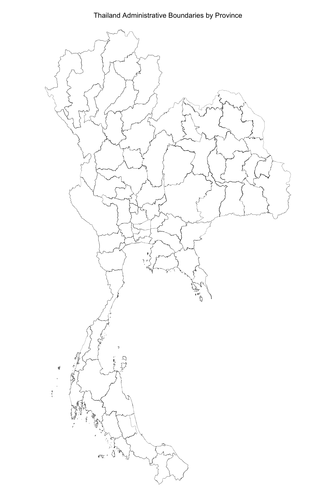

pacman::p_load(sf, sfdep, tmap, tidyverse, corrplot, heatmaply)Take-home Exercise 2: Discovering impacts of COVID-19 on Thailand tourism economy at the province level using spatial and spatio-temporal statistics
1 Overview
Tourism is one of Thailand’s largest industries, contributing approximately 20% to the country’s gross domestic product (GDP). In 2019, Thailand generated 90 billion US dollars from both domestic and international tourism, but this figure plummeted to 24 billion US dollars in 2020 due to the COVID-19 pandemic.
Since September 2021, the tourism sector has been steadily recovering. However, it’s important to note that the tourism economy in Thailand is not evenly distributed across the country, with much of the activity concentrated in key provinces such as Bangkok, Phuket, and Chiang Mai.
2 Objectives
This exercise aims to:
Determine whether the key indicators of Thailand’s tourism economy are independent of spatial and spatio-temporal factors.
If dependencies are identified, the goal is to locate clusters and outliers, and detect emerging hot spots and cold spots in the tourism economy.
3 Getting Started
3.1 The Packages
In this exercise, we will use following packages:
| Package | Description |
|---|---|
| sf | Provides functions to manage, processing, and manipulate Simple Features, a formal geospatial data standard that specifies a storage and access model of spatial geometries such as points, lines, and polygons. |
| sfdep | Provides collection of functions to create spatial weights matrix objects from polygon ‘contiguities’, from point patterns by distance and tessellations. |
| tidyverse | Provides collection of functions for performing data science task such as importing, tidying, wrangling data and visualising data. |
| tmap | Provides functions for plotting cartographic quality static point patterns maps or interactive maps by using leaflet API |
| corrplot | Provides functions for visualizing correlation matrices. |
| heatmaply | Provides an easy-to-use interface for creating interactive heatmaps. |
3.2 The Data
| Dataset Name | Description | Format | Source |
|---|---|---|---|
Thailand Domestic Tourism Statistics [2019-2023] |
Monthly Provincial Data on Tourist Numbers, Occupancy, and Revenue in Thailand | CSV | Kaggle |
| Thailand - Subnational Administrative Boundaries | Administrative boundary data for Thailand’s subnational divisions | ESRI Shapefile | Humanitarian Data Exchange (HDX) |
3.3 Importing Datasets to R environment
3.3.1 Thailand Domestic Tourism Statistics
We will load Thailand Domestic Tourism Statistics data using read_csv() function of readr package.
tourism <- read_csv("data/aspatial/thailand_domestic_tourism_2019_2023_ver2.csv") %>%
pivot_wider(names_from = variable, values_from = value) %>%
select(1,3,5:13)Rows: 30800 Columns: 7
── Column specification ────────────────────────────────────────────────────────
Delimiter: ","
chr (5): province_thai, province_eng, region_thai, region_eng, variable
dbl (1): value
date (1): date
ℹ Use `spec()` to retrieve the full column specification for this data.
ℹ Specify the column types or set `show_col_types = FALSE` to quiet this message.glimpse(tourism)Rows: 3,850
Columns: 11
$ date <date> 2019-01-01, 2019-01-01, 2019-01-01, 2019-01-01, 20…
$ province_eng <chr> "Bangkok", "Lopburi", "Phra Nakhon Si Ayutthaya", "…
$ region_eng <chr> "central", "central", "central", "central", "centra…
$ ratio_tourist_stay <dbl> 93.37, 61.32, 73.37, 67.33, 79.31, 71.70, 64.65, 71…
$ no_tourist_stay <dbl> 3334971, 51858, 117052, 89850, 27141, 118629, 18147…
$ no_tourist_all <dbl> 5959075, 268664, 730329, 207236, 79073, 296107, 494…
$ no_tourist_thai <dbl> 3534061, 266301, 561553, 201400, 78514, 284408, 491…
$ no_tourist_foreign <dbl> 2425014, 2363, 168776, 5836, 559, 11699, 248, 5281,…
$ revenue_all <dbl> 81926490000, 457240000, 1438730000, 347790000, 1017…
$ revenue_thai <dbl> 29742580000, 451830000, 1054250000, 336190000, 1009…
$ revenue_foreign <dbl> 52183910000, 5410000, 384480000, 11600000, 890000, …The original dataset consists of 30,800 rows and 7 column in “long-format”, where each row represents a combination of a variable and its corresponding value for a specific province and time period.
This format can make analysis more difficult since the different metrics are stored in rows instead of separate columns. Therefore we used pivot_wider() function from the tidyr package in R to transform the long format into a wider format. We also dropped province_thai and region_thai column as the information is already available in the English columns.
The resulting dataset has 3,850 rows and 11 columns. The columns are described as follows:
| Column | Description |
|---|---|
| date | The month and year in which the statistics were recorded. The dataset covers the years 2019-2023. |
| province_eng | The name of the province in Thailand, in English. |
| region_eng | The name of the region in Thailand to which the province belongs, in English. |
| no_tourist_all | The total number of domestic tourists who visited the province. |
| no_tourist_foreign | The number of foreign tourists who visited the province. |
| no_tourist_stay | The number of tourists who stay over-night in the province. |
| no_tourist_thai | The number of Thai tourists who visited the province. |
| ratio_tourist_stay | The percentage of occupied travel accommodations in the province. |
| revenue_all | The total revenue generated by the tourism industry in the province (in Thai Baht). |
| revenue_foreign | The revenue generated specifically by foreign tourists (in Thai Baht). |
| revenue_thai | The revenue generated specifically by Thai tourists (in Thai Baht). |
3.3.2 Thailand’s Province Administrative Boundaries
The Thailand subnational administrative boundaries dataset is available at four levels: administrative level 0 (country), level 1 (province), level 2 (district), and level 3 (sub-district or tambon). For this analysis, we will use administrative level 1 (province).
We will load the province-level boundaries using the st_read() function. The boundaries will then be transformed into EPSG:32647, which uses meters as units and is based on the UTM Zone 47N projection. Additionally, we will remove any unnecessary columns to streamline the dataset for analysis.
admin_boundary <- st_read(dsn = "data/geospatial/",
layer = "tha_admbnda_adm1_rtsd_20220121") %>%
st_transform(crs = 32647) %>%
rename(province_eng = ADM1_EN, pcode = ADM1_PCODE) %>%
select(1:3,5)Reading layer `tha_admbnda_adm1_rtsd_20220121' from data source
`/Users/cham/project/Geospatial-Analytics/chrismanafe/ISSS626-GAA/take_home_ex/take_home_ex02/data/geospatial'
using driver `ESRI Shapefile'
Simple feature collection with 77 features and 16 fields
Geometry type: MULTIPOLYGON
Dimension: XY
Bounding box: xmin: 97.34336 ymin: 5.613038 xmax: 105.637 ymax: 20.46507
Geodetic CRS: WGS 84Let’s verify the coordinate reference system of admin_boundary using st_crs function.
st_crs(admin_boundary)Coordinate Reference System:
User input: EPSG:32647
wkt:
PROJCRS["WGS 84 / UTM zone 47N",
BASEGEOGCRS["WGS 84",
ENSEMBLE["World Geodetic System 1984 ensemble",
MEMBER["World Geodetic System 1984 (Transit)"],
MEMBER["World Geodetic System 1984 (G730)"],
MEMBER["World Geodetic System 1984 (G873)"],
MEMBER["World Geodetic System 1984 (G1150)"],
MEMBER["World Geodetic System 1984 (G1674)"],
MEMBER["World Geodetic System 1984 (G1762)"],
MEMBER["World Geodetic System 1984 (G2139)"],
ELLIPSOID["WGS 84",6378137,298.257223563,
LENGTHUNIT["metre",1]],
ENSEMBLEACCURACY[2.0]],
PRIMEM["Greenwich",0,
ANGLEUNIT["degree",0.0174532925199433]],
ID["EPSG",4326]],
CONVERSION["UTM zone 47N",
METHOD["Transverse Mercator",
ID["EPSG",9807]],
PARAMETER["Latitude of natural origin",0,
ANGLEUNIT["degree",0.0174532925199433],
ID["EPSG",8801]],
PARAMETER["Longitude of natural origin",99,
ANGLEUNIT["degree",0.0174532925199433],
ID["EPSG",8802]],
PARAMETER["Scale factor at natural origin",0.9996,
SCALEUNIT["unity",1],
ID["EPSG",8805]],
PARAMETER["False easting",500000,
LENGTHUNIT["metre",1],
ID["EPSG",8806]],
PARAMETER["False northing",0,
LENGTHUNIT["metre",1],
ID["EPSG",8807]]],
CS[Cartesian,2],
AXIS["(E)",east,
ORDER[1],
LENGTHUNIT["metre",1]],
AXIS["(N)",north,
ORDER[2],
LENGTHUNIT["metre",1]],
USAGE[
SCOPE["Engineering survey, topographic mapping."],
AREA["Between 96°E and 102°E, northern hemisphere between equator and 84°N, onshore and offshore. China. Indonesia. Laos. Malaysia - West Malaysia. Mongolia. Myanmar (Burma). Russian Federation. Thailand."],
BBOX[0,96,84,102]],
ID["EPSG",32647]]Next, we will visualize admin_boundary using tmap.
tmap_mode("plot")tmap mode set to plottingtm_shape(admin_boundary)+
tm_fill(col="white") +
tm_borders(col = "black", lwd=0.3, alpha=0.6)+
tm_layout(
main.title = "Thailand Administrative Boundaries by Province",
main.title.size = 1,
main.title.position = "center",
legend.show = FALSE,
frame = FALSE)
4 Exploratory Data Analysis
4.1 Summary statistics
Let’s find out the summary statistics of tourism data using summary() function.
summary(tourism) date province_eng region_eng ratio_tourist_stay
Min. :2019-01-01 Length:3850 Length:3850 Min. : 0.00
1st Qu.:2020-01-01 Class :character Class :character 1st Qu.:20.18
Median :2021-01-16 Mode :character Mode :character Median :41.81
Mean :2021-01-15 Mean :38.93
3rd Qu.:2022-02-01 3rd Qu.:56.20
Max. :2023-02-01 Max. :95.86
no_tourist_stay no_tourist_all no_tourist_thai no_tourist_foreign
Min. : 0 Min. : 0 Min. : 0 Min. : 0.0
1st Qu.: 16271 1st Qu.: 39092 1st Qu.: 37169 1st Qu.: 49.2
Median : 44579 Median : 92122 Median : 88782 Median : 553.0
Mean : 105161 Mean : 206328 Mean : 173962 Mean : 32366.1
3rd Qu.: 90902 3rd Qu.: 203646 3rd Qu.: 184256 3rd Qu.: 5189.5
Max. :3335728 Max. :6131044 Max. :4087756 Max. :2473725.0
revenue_all revenue_thai revenue_foreign
Min. :0.000e+00 Min. :0.000e+00 Min. :-4.250e+03
1st Qu.:6.332e+07 1st Qu.:5.925e+07 1st Qu.: 1.100e+05
Median :1.955e+08 Median :1.773e+08 Median : 1.540e+06
Mean :1.344e+09 Mean :6.636e+08 Mean : 6.802e+08
3rd Qu.:5.060e+08 3rd Qu.:4.600e+08 3rd Qu.: 1.742e+07
Max. :1.103e+11 Max. :4.506e+10 Max. : 8.503e+10 We observed there’s negative value on revenue_foreign variables. Since the revenue represents earnings from tourism, let’s assume that this is likely data entry error. So let’s fix this.
tourism <- tourism %>%
mutate(
revenue_foreign = ifelse(revenue_foreign < 0, 0, revenue_foreign),
revenue_all = ifelse(revenue_foreign == 0, revenue_thai, revenue_all)
)
summary(tourism) date province_eng region_eng ratio_tourist_stay
Min. :2019-01-01 Length:3850 Length:3850 Min. : 0.00
1st Qu.:2020-01-01 Class :character Class :character 1st Qu.:20.18
Median :2021-01-16 Mode :character Mode :character Median :41.81
Mean :2021-01-15 Mean :38.93
3rd Qu.:2022-02-01 3rd Qu.:56.20
Max. :2023-02-01 Max. :95.86
no_tourist_stay no_tourist_all no_tourist_thai no_tourist_foreign
Min. : 0 Min. : 0 Min. : 0 Min. : 0.0
1st Qu.: 16271 1st Qu.: 39092 1st Qu.: 37169 1st Qu.: 49.2
Median : 44579 Median : 92122 Median : 88782 Median : 553.0
Mean : 105161 Mean : 206328 Mean : 173962 Mean : 32366.1
3rd Qu.: 90902 3rd Qu.: 203646 3rd Qu.: 184256 3rd Qu.: 5189.5
Max. :3335728 Max. :6131044 Max. :4087756 Max. :2473725.0
revenue_all revenue_thai revenue_foreign
Min. :0.000e+00 Min. :0.000e+00 Min. :0.000e+00
1st Qu.:6.332e+07 1st Qu.:5.925e+07 1st Qu.:1.100e+05
Median :1.955e+08 Median :1.773e+08 Median :1.540e+06
Mean :1.344e+09 Mean :6.636e+08 Mean :6.802e+08
3rd Qu.:5.060e+08 3rd Qu.:4.600e+08 3rd Qu.:1.742e+07
Max. :1.103e+11 Max. :4.506e+10 Max. :8.503e+10 4.2 Check Missing Values
Let’s check of any missing values in the dataset.
colSums(is.na(tourism)) date province_eng region_eng ratio_tourist_stay
0 0 0 0
no_tourist_stay no_tourist_all no_tourist_thai no_tourist_foreign
0 0 0 0
revenue_all revenue_thai revenue_foreign
0 0 0 4.3 Distribution Plots for Numerical Variables
Let’s visualize the numerical variables by province. We will apply a log transformation since some provinces have significantly larger numbers of tourists, which could make the boxplot difficult to analyze without scaling.
ggplot(tourism, aes(x = reorder(province_eng, no_tourist_all, FUN = median), y = no_tourist_all)) +
geom_boxplot(fill = "lightblue", color = "black") +
theme_minimal() +
scale_y_log10() + # Log transformation for better scaling
labs(title = "Boxplot of Tourists by Province (Log-Scale)",
x = "Province",
y = "Number of Tourists (Log Scale)") +
theme(axis.text.x = element_text(angle = 90, hjust = 1))Warning in scale_y_log10(): log-10 transformation introduced infinite values.Warning: Removed 25 rows containing non-finite outside the scale range
(`stat_boxplot()`).ggplot(tourism, aes(x = reorder(province_eng, revenue_all, FUN = median), y = revenue_all)) +
geom_boxplot(fill = "lightblue", color = "black") +
theme_minimal() +
scale_y_log10() + # Log transformation for better scaling
labs(title = "Boxplot of Revenue by Province (Log Scale)", x = "Province", y = "Total Revenue (Log Scale)") +
theme(axis.text.x = element_text(angle = 90, hjust = 1))Warning in scale_y_log10(): log-10 transformation introduced infinite values.Warning: Removed 24 rows containing non-finite outside the scale range
(`stat_boxplot()`).ggplot(tourism, aes(x = reorder(province_eng, no_tourist_stay, FUN = median), y = no_tourist_stay)) +
geom_boxplot(fill = "lightblue", color = "black") +
theme_minimal() +
scale_y_log10() + # Log transformation for better scaling
labs(title = "Boxplot of Overnight-Staying Tourists (Log Scale) by Province",
x = "Province",
y = "Number of Overnight-Staying Tourists (Log Scale)") +
theme(axis.text.x = element_text(angle = 90, hjust = 1))Warning in scale_y_log10(): log-10 transformation introduced infinite values.Warning: Removed 25 rows containing non-finite outside the scale range
(`stat_boxplot()`).
Note
Observations:
The three boxplots above provide insights into tourism activity across Thai provinces, focusing on total tourists, overnight-staying tourists, and total tourism revenue.
- Tourist Concentration: Provinces like Bangkok, Chiang Mai, and Phuket consistently show the highest median values across all three metrics, highlighting their dominance as key tourist hubs. These provinces also exhibit greater variability, indicating fluctuating tourism activity possibly due to factors like seasonality or COVID-19 pandemics.
- Smaller Provinces: Provinces such as Amnat Charoen and Nong Bua Lamphu consistently display much lower median values and narrower interquartile ranges (IQR), suggesting smaller tourist volumes and revenues.
- Outliers: Many provinces show significant lower-end outliers across all metrics, likely reflecting periods of reduced tourist activity due to external factors like travel restrictions during COVID-19 pandemics.
Overall, Thailand’s tourism revenue and tourist distribution are concentrated in a few key provinces, with the majority of smaller provinces experiencing lower and more stable activity.
5 Data Wrangling
5.1 Feature engineering
We wanted to introduce new indicators to enhance our analysis of tourist behavior and economic impact. We’ll create two key indicators:
- Tourist Stay Rate: The percentage of tourists staying overnight in each province.
- Revenue Per Tourist (Overall): The average revenue generated per tourist.
tourism <- tourism %>%
mutate(
tourist_stay_rate = ifelse(no_tourist_all > 0, (no_tourist_stay / no_tourist_all) * 100, 0),
revenue_per_tourist_all = ifelse(no_tourist_all > 0, revenue_all / no_tourist_all, 0)
)5.2 Province name alignment
We will resolve discrepancies in province names between the boundary and tourism datasets to ensure consistency, enabling accurate analysis and spatial joins. First, we will extract unique province names from both datasets and checks for mismatches by identifying provinces present in one dataset but not the other.
# Extract unique values from both columns
admin_provinces <- unique(admin_boundary$province_eng)
tourism_provinces <- unique(tourism$province_eng)
# Check for mismatches
admin_not_in_tourism <- setdiff(admin_provinces, tourism_provinces)
tourism_not_in_admin <- setdiff(tourism_provinces, admin_provinces)
# Print mismatches
print(admin_not_in_tourism)[1] "Lop Buri" "Chai Nat" "Chon Buri" "Prachin Buri"
[5] "Buri Ram" "Si Sa Ket" "Nong Bua Lam Phu" "Phangnga" print(tourism_not_in_admin)[1] "Lopburi" "Chainat" "Chonburi" "Prachinburi"
[5] "Phang Nga" "Buriram" "Sisaket" "Nong Bua Lamphu"We identified 8 provinces with different English names between the two datasets, so we will use
mutate()to align the province names in thetourismdataset to match those in theadmin_boundarydataset.
tourism <- tourism %>%
mutate(province_eng = case_when(
province_eng == "Lopburi" ~ "Lop Buri",
province_eng == "Chainat" ~ "Chai Nat",
province_eng == "Chonburi" ~ "Chon Buri",
province_eng == "Prachinburi" ~ "Prachin Buri",
province_eng == "Phang Nga" ~ "Phangnga",
province_eng == "Buriram" ~ "Buri Ram",
province_eng == "Sisaket" ~ "Si Sa Ket",
province_eng == "Nong Bua Lamphu" ~ "Nong Bua Lam Phu",
TRUE ~ province_eng # Keep the original name if no match
))Let’s verify the result.
# Extract unique values from both columns
admin_provinces <- unique(admin_boundary$province_eng)
tourism_provinces <- unique(tourism$province_eng)
# Check for mismatches
admin_not_in_tourism <- setdiff(admin_provinces, tourism_provinces)
tourism_not_in_admin <- setdiff(tourism_provinces, admin_provinces)
# Print mismatches
print(admin_not_in_tourism)character(0)print(tourism_not_in_admin)character(0)5.3 Perform relational join
Since the tourism dataset does not contain any geospatial properties, we will perform a relational join with the admin_boundary dataset, which includes the necessary spatial information. This will allow us to incorporate geospatial data into the tourism dataset. We will use the left_join() function from the dplyr package to merge the two datasets based on the province names.
tourism_geo <- left_join(admin_boundary, tourism)Joining with `by = join_by(province_eng)`glimpse(tourism_geo)Rows: 3,850
Columns: 17
$ Shape_Leng <dbl> 2.417227, 2.417227, 2.417227, 2.417227, 2.4172…
$ Shape_Area <dbl> 0.1313387, 0.1313387, 0.1313387, 0.1313387, 0.…
$ province_eng <chr> "Bangkok", "Bangkok", "Bangkok", "Bangkok", "B…
$ pcode <chr> "TH10", "TH10", "TH10", "TH10", "TH10", "TH10"…
$ date <date> 2019-01-01, 2020-01-01, 2021-01-01, 2022-01-0…
$ region_eng <chr> "central", "central", "central", "central", "c…
$ ratio_tourist_stay <dbl> 93.37, 89.36, 7.54, 26.34, 75.02, 89.19, 68.37…
$ no_tourist_stay <dbl> 3334971, 3213765, 354676, 1009583, 2440463, 30…
$ no_tourist_all <dbl> 5959075, 6046765, 1681847, 2437497, 4872078, 5…
$ no_tourist_thai <dbl> 3534061, 3573040, 1632693, 2299906, 2749877, 2…
$ no_tourist_foreign <dbl> 2425014, 2473725, 49154, 137591, 2122201, 2291…
$ revenue_all <dbl> 81926490000, 88202890000, 9539730000, 11823610…
$ revenue_thai <dbl> 29742580000, 31137650000, 8447450000, 96426000…
$ revenue_foreign <dbl> 52183910000, 57065240000, 1092280000, 21810100…
$ tourist_stay_rate <dbl> 55.96458, 53.14850, 21.08848, 41.41884, 50.090…
$ revenue_per_tourist_all <dbl> 13748.189, 14586.790, 5672.175, 4850.718, 1237…
$ geometry <MULTIPOLYGON [m]> MULTIPOLYGON (((674339.8 15..., M…write_rds(tourism_geo, "data/rds/tourism_geo.rds")5.4 Province-level Summary of Tourism Economy Indicators
We will prepare a province-level summary of key tourism indicators, including both original metrics such as total tourists, foreign tourists, and total revenue, as well as newly engineered indicators like the tourist stay rate and revenue per tourist. This summary will provide a overall view of tourism patterns and economic contributions across each province.
province_summary <- tourism_geo %>%
group_by(province_eng) %>%
summarise(
# Summarize original data
total_tourists_all = sum(no_tourist_all, na.rm = TRUE),
total_foreign_tourists = sum(no_tourist_foreign, na.rm = TRUE),
total_thai_tourists = sum(no_tourist_thai, na.rm = TRUE),
total_stay_tourists = sum(no_tourist_stay, na.rm = TRUE),
avg_occupancy_rate = mean(ratio_tourist_stay, na.rm = TRUE),
total_revenue_all = sum(revenue_all, na.rm = TRUE),
total_revenue_foreign = sum(revenue_foreign, na.rm = TRUE),
total_revenue_thai = sum(revenue_thai, na.rm = TRUE),
# Summarize engineered data
avg_tourist_stay_rate = mean(tourist_stay_rate, na.rm = TRUE),
avg_revenue_per_tourist = mean(revenue_per_tourist_all, na.rm = TRUE)
)
write_rds(province_summary, "data/rds/province_summary.rds")We will use following indicators for our analysis:
- Total Tourists (
total_tourists_all), because it helps us understand how tourist numbers are distributed across provinces.- Tourist Stay Rate (
avg_tourist_stay_rate), because it could reveal regional patterns in how provinces retain visitors to stay over-night.- Revenue Per Tourist (
avg_revenue_per_tourist), because it helps identify areas where tourism generates the most economic benefit, potentially showing clusters of higher revenue generation.
5.5 Spacetime Cube
The sfdep package introduces an S3 class called spacetime, developed by Edzer Pebesma (2012), to represent spatio-temporal data. The spacetime class links a flat dataset containing both spatial and temporal information with the corresponding geometry. By encapsulating both spatial and temporal aspects, it is ideal for conducting spatio-temporal analysis. We will utilize this spacetime cube for our spatio-temporal analysis in the Emerging Hot Spot Analysis section.
We will use the spacetime() function from the sfdep package to create a spatio-temporal cube of the data. The year and month will serve as our temporal factors for structuring the analysis.
First, we will add period column to our tourism data by combining the year and month using the format() function, and then converting it to an integer with as.integer().
tourism <- tourism %>%
mutate(period = as.integer(format(date, "%Y%m")))Next, we will create a spatio-temporal cube using the spacetime() function from the sfdep package. We will use the period as the time_col and province_eng as the loc_col to represent the temporal and spatial dimensions. We’ll also set NA values in revenue_per_tourist_all and tourist_stay_rate to 0, as this will help us identify potential cold spots in the analysis later.
tourism$tourist_stay_rate[is.na(tourism$tourist_stay_rate)] <- 0
tourism$revenue_per_tourist_all[is.na(tourism$revenue_per_tourist_all)] <- 0
tourism_st <- spacetime(tourism, admin_boundary,
.loc_col = "province_eng",
.time_col = "period")Next, we will use is_spacetime_cube() of sfdep package to verify if tourism_st is indeed an space-time cube object.
is_spacetime_cube(tourism_st)[1] TRUE tourism_st <- tourism_st %>%
activate("geometry") %>%
mutate(nb = st_knn(geometry, k = 8),
wt = st_inverse_distance(nb, geometry, scale = 1, alpha = 1),
wt = map(wt, ~ .x / sum(.x)),
.before = 1) %>%
set_nbs("nb") %>%
set_wts("wt")! Polygon provided. Using point on surface.
! Polygon provided. Using point on surface.5.6 Visualization of Thailand’s Tourism Distribution
Using the province_summary data frame, we will create choropleth maps to visualize the geographical distribution of the 3 tourism economy indicators across Thailand.
tourist <- tm_shape(province_summary) +
tm_fill("total_tourists_all",
n = 5,
style = "quantile") +
tm_borders(alpha = 0.5) +
tm_layout(main.title = "Total Tourist", main.title.size = 1)
foreign_tourists <- tm_shape(province_summary) +
tm_fill("avg_tourist_stay_rate",
n = 5,
style = "quantile") +
tm_borders(alpha = 0.5) +
tm_layout(main.title = "Tourist Stay Rate", main.title.size = 1)
revenue_per_tourist <- tm_shape(province_summary) +
tm_fill("avg_revenue_per_tourist",
n = 5,
style = "quantile") +
tm_borders(alpha = 0.5) +
tm_layout(main.title = "Revenue per Tourist", main.title.size = 1)
tmap_arrange(tourist,
foreign_tourists,
revenue_per_tourist,
asp=1,
ncol=3)6 Global Measures of Spatial Autocorrelation
In this section, we will compute global spatial autocorrelation statistics to evaluate whether the key indicators exhibit spatial dependence across provinces. Specifically, we will use Moran’s I to measure the degree of spatial autocorrelation.
6.1 Computing Contiguity Neighbours
Typically, we use the st_contiguity() function from the sfdep package to compute contiguity weight matrices, which build neighbor relationships based on shared boundaries between regions. However, because our dataset includes province located on separate island (i.e. Phuket), contiguity-based methods would leave some region without neighbors. To overcome this issue, we will use the K-Nearest Neighbors (KNN) approach to compute spatial weights. This method ensures that every province has neighbors, even for those on isolated islands, by assigning each region a fixed number of nearest neighbors based on distance rather than shared boundaries.
First, we need to ensure that the centroids used for each province are correctly placed within the province boundaries and not in the sea or outside of the boundary.
province_centroids <- province_summary %>%
st_centroid() %>%
select(province_eng, geometry)Warning: st_centroid assumes attributes are constant over geometriestmap_mode('plot')tmap mode set to plottingtm_shape(province_summary) +
tm_borders() +
tm_shape(province_centroids) +
tm_dots(col = "red", size = 0.1) +
tm_layout(main.title = "Centroids of Thailand Provinces",
main.title.position = "center",
frame = FALSE)We verified that the centroids are correctly placed within the province boundaries, ensuring that none are positioned in the sea or outside their respective boundaries.
With the centroids correctly positioned, we will proceed with two approaches for computing spatial weights:
K-Nearest Neighbors (KNN): Using the
st_knn()function from the sfdep package, we will compute KNN-based spatial weights. This ensures that all provinces, including those on isolated islands, have neighbors based on geographic proximity rather than shared boundaries.Distance Band Weights: We will also use the
st_dist_band()function from sfdep to create a distance-based spatial weights matrix. This method defines neighbors for provinces based on a maximum distance threshold, ensuring that regions within a certain distance of each other are considered neighbors.
Both methods will help account for geographic proximity while ensuring that all regions, including isolated provinces, are part of the spatial analysis.
wm_knn <- province_summary %>%
mutate(nb = st_knn(geometry, k = 8),
wt = st_inverse_distance(nb, geometry, scale = 1, alpha = 1),
wt = map(wt, ~ .x / sum(.x)),
.before = 1)! Polygon provided. Using point on surface.
! Polygon provided. Using point on surface.wm_fd <- province_summary %>%
mutate(nb = st_dist_band(province_summary$geometry),
wt = st_inverse_distance(nb, geometry, scale = 1, alpha = 1),
wt = map(wt, ~ .x / sum(.x)),
.before = 1)! Polygon provided. Using point on surface.
! Polygon provided. Using point on surface.We normalize the inverse distance weights to ensure that each province’s spatial influence is comparable and sum up to 1.
6.2 Global Moran’s I Test and Permutation Test
In this section, we will assess the spatial dependence of three key tourism indicators across provinces in Thailand using the Global Moran’s I test. If the indicators are independent of space, Moran’s I should show no significant spatial autocorrelation.
Null Hypothesis (H₀): The tourism economy indicators are spatially independent (randomly distributed in space).
Alternative Hypothesis (H₁): There is spatial dependence, indicating that similar values are clustered or dispersed.
We will conduct the analysis at a 95% confidence interval (significance level of 0.05) using the global_moran_test function from the sfdep package. Additionally, we will run a permutation test with 1,000 simulations to validate the results using global_moran_perm function.
We will evaluate the following tourism economy indicators:
- Total Tourists
- Average of Tourist Stay Rate
- Revenue per Tourist
For each indicator, we will apply both the K-Nearest Neighbors (KNN) and Distance Band weight matrices to observe the spatial patterns.
6.2.1 Total Tourists: Global Moran’s I Test and Permutation Test
6.2.1.1 KNN Weights
global_moran_test(wm_knn$total_tourists_all,
wm_knn$nb,
wm_knn$wt,
zero.policy = TRUE,
na.action=na.omit)
Moran I test under randomisation
data: x
weights: listw
Moran I statistic standard deviate = 1.1069, p-value = 0.1342
alternative hypothesis: greater
sample estimates:
Moran I statistic Expectation Variance
0.026678128 -0.013157895 0.001295218 set.seed(2024)
global_moran_perm(wm_knn$total_tourists_all,
wm_knn$nb,
wm_knn$wt,
nsim = 999)
Monte-Carlo simulation of Moran I
data: x
weights: listw
number of simulations + 1: 1000
statistic = 0.026678, observed rank = 879, p-value = 0.242
alternative hypothesis: two.sided6.2.1.2 Distance Band Weights
global_moran_test(wm_fd$total_tourists_all,
wm_fd$nb,
wm_fd$wt,
zero.policy = TRUE,
na.action=na.omit)
Moran I test under randomisation
data: x
weights: listw
Moran I statistic standard deviate = 1.0694, p-value = 0.1424
alternative hypothesis: greater
sample estimates:
Moran I statistic Expectation Variance
0.040849188 -0.013157895 0.002550464 set.seed(2024)
global_moran_perm(wm_fd$total_tourists_all,
wm_fd$nb,
wm_fd$wt,
nsim = 999)
Monte-Carlo simulation of Moran I
data: x
weights: listw
number of simulations + 1: 1000
statistic = 0.040849, observed rank = 881, p-value = 0.238
alternative hypothesis: two.sidedObservations:
K-Nearest Neighbors (KNN):
- Moran’s I statistic: 0.0267
- p-value (Moran’s I test): 0.1342
- p-value (Monte Carlo permutation test): 0.242
The Moran’s I statistic of 0.0267 shows very weak positive spatial autocorrelation, suggesting almost no spatial clustering of total tourists. Both the Moran’s I test and the Monte Carlo permutation test yield high p-values (above 0.05), indicating that we fail to reject the null hypothesis. This implies that the distribution of total tourists remains random, with no significant spatial clustering when using normalized KNN weights.
Distance Band Weights:
- Moran’s I statistic: 0.0408
- p-value (Moran’s I test): 0.1424
- p-value (Monte Carlo permutation test): 0.238
The Moran’s I statistic of 0.0408 also shows weak positive spatial autocorrelation, indicating no substantial clustering of total tourists across provinces. The high p-values from both the Moran’s I test and Monte Carlo permutation test further confirm that we fail to reject the null hypothesis. The total tourist distribution remains random, with no significant spatial dependence when using normalized distance-based weights.
For total tourists, both the KNN and distance band methods show no significant spatial autocorrelation. The p-values from both tests indicate that we fail to reject the null hypothesis.
6.2.2 Average of Tourist Stay Rate: Global Moran’s I Test and Permutation Test
6.2.2.1 KNN Weights
global_moran_test(wm_knn$avg_tourist_stay_rate,
wm_knn$nb,
wm_knn$wt,
zero.policy = TRUE,
na.action=na.omit)
Moran I test under randomisation
data: x
weights: listw
Moran I statistic standard deviate = 7.4571, p-value = 4.422e-14
alternative hypothesis: greater
sample estimates:
Moran I statistic Expectation Variance
0.409217712 -0.013157895 0.003208175 set.seed(2024)
global_moran_perm(wm_knn$avg_tourist_stay_rate,
wm_knn$nb,
wm_knn$wt,
nsim = 999)
Monte-Carlo simulation of Moran I
data: x
weights: listw
number of simulations + 1: 1000
statistic = 0.40922, observed rank = 1000, p-value < 2.2e-16
alternative hypothesis: two.sided6.2.2.2 Distance Band Weights
global_moran_test(wm_fd$avg_tourist_stay_rate,
wm_fd$nb,
wm_fd$wt,
zero.policy = TRUE,
na.action=na.omit)
Moran I test under randomisation
data: x
weights: listw
Moran I statistic standard deviate = 5.9277, p-value = 1.536e-09
alternative hypothesis: greater
sample estimates:
Moran I statistic Expectation Variance
0.458854837 -0.013157895 0.006340634 set.seed(2024)
global_moran_perm(wm_fd$avg_tourist_stay_rate,
wm_fd$nb,
wm_fd$wt,
nsim = 999)
Monte-Carlo simulation of Moran I
data: x
weights: listw
number of simulations + 1: 1000
statistic = 0.45885, observed rank = 1000, p-value < 2.2e-16
alternative hypothesis: two.sidedObservations:
K-Nearest Neighbors (KNN):
- Moran’s I statistic: 0.4092
- p-value (Moran’s I test): 4.422e-14
- p-value (Monte Carlo permutation test): < 2.2e-16
The Moran’s I statistic of 0.4092 indicates strong positive spatial autocorrelation, suggesting that provinces with similar tourist stay rates tend to be clustered together. Both the Moran’s I test and the Monte Carlo permutation test return extremely low p-values, confirming that this clustering is highly statistically significant. Thus, we reject the null hypothesis, as there is strong evidence of spatial dependence in tourist stay rates when using normalized KNN weights.
Distance Band Weights:
- Moran’s I statistic: 0.4586
- p-value (Moran’s I test): 1.536e-09
- p-value (Monte Carlo permutation test): < 2.2e-16
The Moran’s I statistic of 0.4586 shows strong positive spatial autocorrelation, indicating that provinces with similar tourist stay rates are geographically clustered. Both the Moran’s I test and the Monte Carlo permutation test yield very low p-values, confirming that this spatial clustering is highly statistically significant. Therefore, we reject the null hypothesis, as there is strong evidence of spatial dependence using normalized distance-based weights.
For average tourist stay rate, both the KNN and distance band methods show strong spatial autocorrelation, and the results are highly statistically significant. In both cases, we reject the null hypothesis, indicating that provinces with similar tourist stay rates are spatially clustered.
6.2.3 Average Revenue per Tourists: Global Moran’s I Test and Permutation Test
6.2.3.1 KNN Weights
global_moran_test(wm_knn$avg_revenue_per_tourist,
wm_knn$nb,
wm_knn$wt,
zero.policy = TRUE,
na.action=na.omit)
Moran I test under randomisation
data: x
weights: listw
Moran I statistic standard deviate = 7.125, p-value = 5.204e-13
alternative hypothesis: greater
sample estimates:
Moran I statistic Expectation Variance
0.344633674 -0.013157895 0.002521688 set.seed(2024)
global_moran_perm(wm_knn$avg_revenue_per_tourist,
wm_knn$nb,
wm_knn$wt,
nsim = 999)
Monte-Carlo simulation of Moran I
data: x
weights: listw
number of simulations + 1: 1000
statistic = 0.34463, observed rank = 1000, p-value < 2.2e-16
alternative hypothesis: two.sided6.2.3.2 Distance Band Weights
global_moran_test(wm_fd$avg_revenue_per_tourist,
wm_fd$nb,
wm_fd$wt,
zero.policy = TRUE,
na.action=na.omit)
Moran I test under randomisation
data: x
weights: listw
Moran I statistic standard deviate = 6.3368, p-value = 1.173e-10
alternative hypothesis: greater
sample estimates:
Moran I statistic Expectation Variance
0.434043125 -0.013157895 0.004980487 set.seed(2024)
global_moran_perm(wm_fd$avg_revenue_per_tourist,
wm_fd$nb,
wm_fd$wt,
nsim = 999)
Monte-Carlo simulation of Moran I
data: x
weights: listw
number of simulations + 1: 1000
statistic = 0.43404, observed rank = 1000, p-value < 2.2e-16
alternative hypothesis: two.sidedObservations:
K-Nearest Neighbors (KNN):
- Moran’s I statistic: 0.3446
- p-value (Moran’s I test): 5.204e-13
- p-value (Monte Carlo permutation test): < 2.2e-16
The Moran’s I statistic of 0.3446 indicates moderate positive spatial autocorrelation, suggesting that provinces with similar revenue per tourist tend to be clustered. Both the Moran’s I test and the Monte Carlo permutation test return very low p-values, confirming that this clustering is highly statistically significant. Therefore, we reject the null hypothesis, as there is strong evidence of spatial dependence in revenue per tourist when using normalized KNN weights.
Distance Band Weights:
- Moran’s I statistic: 0.4340
- p-value (Moran’s I test): 1.173e-10
- p-value (Monte Carlo permutation test): < 2.2e-16
The Moran’s I statistic of 0.4340 indicates strong positive spatial autocorrelation, showing that provinces with similar revenue per tourist are geographically clustered. Both the Moran’s I test and the Monte Carlo permutation test yield extremely low p-values, confirming that this spatial clustering is highly statistically significant. Therefore, we reject the null hypothesis, as there is clear evidence of spatial dependence using normalized distance-based weights.
For average revenue per tourist, both the KNN and distance band methods with inverse distance weights show moderate spatial autocorrelation, and the results are statistically significant. In both cases, we reject the null hypothesis, indicating that provinces with similar revenue per tourist are spatially clustered.
6.3 Interpreting Results
The results from the Global Moran’s I test and the Monte Carlo simulation tell us that:
Total tourist numbers show weak spatial autocorrelation, indicating that while some provinces attract more tourists, there is no strong regional clustering. The distribution of tourists seems random, with individual provinces standing out rather than forming distinct regional patterns.
In contrast, both average tourist stay rate and average revenue per tourist display moderate to strong and statistically significant spatial autocorrelation. Provinces that are geographically close tend to have similar tourist retention rates and revenue generated per tourist. This suggests that these tourism economy indicators are regionally concentrated, likely due to shared tourism infrastructure, similar attractions, or collaborative regional policies.
7 Local Measures of Spatial Autocorrelation
Local Indicators of Spatial Association (LISA) allow us to evaluate clusters between regions. Simply put, LISA is a statistical method that helps identify areas where values are either clustered (similar values are found together) or where there are outliers. Higher LISA values indicate that a region is more strongly influenced by its neighboring regions, meaning it is part of a spatial cluster.
In this section, we will apply Local Indicators of Spatial Association (LISA) to the same tourism indicators used in the Global Moran’s I analysis.
7.1 Cluster and Outlier Analysis
7.1.1 Computing Local Moran’s I
We will compute Local Moran’s I of three selected indicators at province level by using local_moran() function of sfdep package.
set.seed(2024)
lisa_total_tourists_knn <- wm_knn %>%
mutate(local_moran = local_moran(
total_tourists_all, nb, wt),
.before = 1) %>%
unnest(local_moran)set.seed(2024)
lisa_tourist_stay_rate_knn <- wm_knn %>%
mutate(local_moran = local_moran(
avg_tourist_stay_rate, nb, wt),
.before = 1) %>%
unnest(local_moran)set.seed(2024)
lisa_revenue_per_tourist_knn <- wm_knn %>%
mutate(local_moran = local_moran(
avg_revenue_per_tourist, nb, wt),
.before = 1) %>%
unnest(local_moran)7.1.2 Plotting LISA map
We will use the tmap package to visualize the results of the Local Moran’s I computation, specifically using the values from the ii and mean fields. To enable effective comparison, we will plot both maps side by side—one showing the local spatial autocorrelation (ii values) and the other highlighting the clusters or outliers of total tourists. Specifically, we will highlight clusters where the p-values from the Local Moran’s I are below 0.05, indicating potential spatial clusters or outliers.
First, let’s define the label and palette for each cluster.
colors <- c("#ffffff", "#2c7bb6", "#abd9e9", "#fdae61", "#d7191c")
clusters <- c("Insignificant", "Low-Low", "Low-High", "High-Low", "High-High")7.1.2.1 Total Number of Tourists
lisa_total_tourists_knn$quadrant <- case_when(
lisa_total_tourists_knn$p_ii_sim >= 0.05 ~ 0, # Set quadrant to 0 if p_ii_sim is greater than or equal to 0.05
lisa_total_tourists_knn$mean == "Low-Low" ~ 1, # Assign quadrant values for significant clusters
lisa_total_tourists_knn$mean == "Low-High" ~ 2,
lisa_total_tourists_knn$mean == "High-Low" ~ 3,
lisa_total_tourists_knn$mean == "High-High" ~ 4
)
tmap_mode("plot")tmap mode set to plottingmap1 <- tm_shape(lisa_total_tourists_knn) +
tm_fill("ii") +
tm_borders(alpha = 0.5) +
tm_view() +
tm_layout(
main.title = "Local Moran's I of Total Tourists",
main.title.size = 0.8
)
map2 <- tm_shape(lisa_total_tourists_knn) +
tm_fill("quadrant",
breaks = c(-0.5, 0.5, 1.5, 2.5, 3.5, 4.5),
palette = colors,
labels = clusters)+
tm_borders(alpha = 0.5) +
tm_view() +
tm_layout(
main.title = "LISA Map of Total Tourists",
main.title.size = 0.8
)
tmap_arrange(map1, map2, ncol = 2)Variable(s) "ii" contains positive and negative values, so midpoint is set to 0. Set midpoint = NA to show the full spectrum of the color palette.7.1.2.2 Average of Tourist Stay Rate
lisa_tourist_stay_rate_knn$quadrant <- case_when(
lisa_tourist_stay_rate_knn$p_ii_sim >= 0.05 ~ 0, # Set quadrant to 0 if p_ii_sim is greater than or equal to 0.05
lisa_tourist_stay_rate_knn$mean == "Low-Low" ~ 1, # Assign quadrant values for significant clusters
lisa_tourist_stay_rate_knn$mean == "Low-High" ~ 2,
lisa_tourist_stay_rate_knn$mean == "High-Low" ~ 3,
lisa_tourist_stay_rate_knn$mean == "High-High" ~ 4
)
tmap_mode("plot")tmap mode set to plottingmap1 <- tm_shape(lisa_tourist_stay_rate_knn) +
tm_fill("ii") +
tm_borders(alpha = 0.5) +
tm_view(set.zoom.limits = c(6,8)) +
tm_layout(
main.title = "Local Moran's I of Tourists Stay Rate",
main.title.size = 0.8
)
map2 <- tm_shape(lisa_tourist_stay_rate_knn) +
tm_fill("quadrant",
breaks = c(-0.5, 0.5, 1.5, 2.5, 3.5, 4.5),
palette = colors,
labels = clusters) +
tm_borders(alpha = 0.5) +
tm_view() +
tm_layout(
main.title = "LISA Map of Tourists Stay Rate",
main.title.size = 0.8
)
tmap_arrange(map1, map2, ncol = 2)Variable(s) "ii" contains positive and negative values, so midpoint is set to 0. Set midpoint = NA to show the full spectrum of the color palette.tmap_mode("plot")tmap mode set to plotting7.1.2.3 Average Revenue Per Tourists
lisa_revenue_per_tourist_knn$quadrant <- case_when(
lisa_revenue_per_tourist_knn$p_ii_sim >= 0.05 ~ 0, # Set quadrant to 0 if p_ii_sim is greater than or equal to 0.05
lisa_revenue_per_tourist_knn$mean == "Low-Low" ~ 1, # Assign quadrant values for significant clusters
lisa_revenue_per_tourist_knn$mean == "Low-High" ~ 2,
lisa_revenue_per_tourist_knn$mean == "High-Low" ~ 3,
lisa_revenue_per_tourist_knn$mean == "High-High" ~ 4
)
tmap_mode("plot")tmap mode set to plottingmap1 <- tm_shape(lisa_revenue_per_tourist_knn) +
tm_fill("ii") +
tm_borders(alpha = 0.5) +
tm_view() +
tm_layout(
main.title = "Local Moran's I of Revenue per Tourist",
main.title.size = 0.8
)
map2 <- tm_shape(lisa_revenue_per_tourist_knn) +
tm_fill("quadrant",
breaks = c(-0.5, 0.5, 1.5, 2.5, 3.5, 4.5),
palette = colors,
labels = clusters) +
tm_borders(alpha = 0.5) +
tm_view() +
tm_layout(
main.title = "LISA Map of Revenue per Tourist",
main.title.size = 0.8
)
tmap_arrange(map1, map2, ncol = 2)Variable(s) "ii" contains positive and negative values, so midpoint is set to 0. Set midpoint = NA to show the full spectrum of the color palette.
Note
Observations:
In the analysis of total tourists, Samut Prakan emerges as a Low-High outlier. This province has 8 million tourists in contrast to its neighboring province, Bangkok, which sees 151 million tourists. For tourist stay rates, several Low-High outliers are observed in provinces surrounding Bangkok, likely due to the prevalence of day trips where tourists visit nearby locations but return to Bangkok by the end of the day. Additionally, High-High clusters are identified in Krabi and adjacent southern provinces, with a Low-High outlier in Phang Nga, which is in close proximity to the popular tourist destinations such as Phuket and Krabi.
In terms of revenue per tourist, Bangkok is classified as a High-Low outlier, which aligns with its status as Thailand’s primary tourism hub, attracting the largest number of tourists. Furthermore, a High-High cluster is evident in Phuket, Krabi, and Phang Nga, which are well-known major tourism areas. However, neighboring provinces such as Nakhon Si Thammarat and Phatthalung are identified as Low-High outliers, despite their proximity to these popular destinations.
7.2 Hot and Cold Spot Analysis with Local Gi*
Besides detecting clusters and outliers, localized spatial statistics can also be used to identify hot spots and/or cold spots.
The High/Low Clustering (General G) tool measures the spatial concentration of high or low values within a given study area. The null hypothesis for this statistic states that there is no spatial clustering of feature values. When the p-value is small and statistically significant, the null hypothesis can be rejected, and the sign of the Gi value becomes crucial for interpretation.
If the Gi value is positive and statistically significant, it indicates that the location is associated with high values in the surrounding area (i.e., hot spots).
If the Gi value is negative and statistically significant, it indicates that the location is surrounded by low values (i.e., cold spots).
The Getis-Ord General G tool is most effective when values are evenly distributed across the area, as it helps identify unexpected clusters of high values (hot spots). However, it has a limitation: when both high and low values are clustered within the same region, they tend to cancel each other out, reducing the tool’s effectiveness in such cases.
In this study, we will compute the Local Gi statistic in R. First, we will use the st_dist_band() function to create a neighbor list, and then apply the include_self() function to ensure that the focal observation is included in its own neighbor list. Afterward, we will use this neighbor list to create a weight list by applying the st_inverse_distance() function. To ensure comparability and balanced influence across locations, we will normalize the weights, which helps prevent bias and stabilizes the effect of distance on the results.
wm_idw <- province_summary %>%
mutate(nb = include_self(st_dist_band(geometry)),
wt = st_inverse_distance(nb, geometry,
scale = 1,
alpha = 1),
wt = map(wt, ~ .x / sum(.x)),
.before = 1)! Polygon provided. Using point on surface.
! Polygon provided. Using point on surface.Now, we will calculate the Local Gi statistic using the local_gstar_perm() function from the sfdep package. This function takes a neighbor list (nb) and a weight list (wt) as inputs and generates the Gi statistics* through a Monte Carlo permutation with a specified number of simulations (nsim). The results will then be stored in a new object called HCSA.
After we run the Montewe replace any p-values (p_sim) greater than 0.05 with NA to filter out non-significant results. Then, we update the Gi statistic (gi_star) by setting it to NA for any non-significant values, ensuring that only statistically significant hot spots and cold spots are retained in the final output.
7.2.1 Compute Local Gi statistic
Total Number of Tourists
HCSA_total_tourist <- wm_idw %>%
mutate(local_Gi = local_gstar_perm(
total_tourists_all, nb, wt, nsim = 999),
.before = 1) %>%
unnest(local_Gi) %>%
mutate("p_sim" = replace(`p_sim`, `p_sim` > 0.05, NA),
"gi_star" = ifelse(is.na(`p_sim`), NA, `gi_star`))Average of Tourist Stay Rate
HCSA_tourist_stay_rate <- wm_idw %>%
mutate(local_Gi = local_gstar_perm(
avg_tourist_stay_rate, nb, wt, nsim = 999),
.before = 1) %>%
unnest(local_Gi) %>%
mutate("p_sim" = replace(`p_sim`, `p_sim` > 0.05, NA),
"gi_star" = ifelse(is.na(`p_sim`), NA, `gi_star`))Average Revenue per Tourist
HCSA_revenue_per_tourist <- wm_idw %>%
mutate(local_Gi = local_gstar_perm(
avg_revenue_per_tourist, nb, wt, nsim = 999),
.before = 1) %>%
unnest(local_Gi) %>%
mutate("p_sim" = replace(`p_sim`, `p_sim` > 0.05, NA),
"gi_star" = ifelse(is.na(`p_sim`), NA, `gi_star`))7.2.2 Visualize local hot spot and cold spot areas
Next, we will visualize the locations of hot spot and cold spot areas. The choropleth mapping functions from the tmap package will be used to map the Gi values for each selected indicator.
tmap_mode("plot")tmap mode set to plottingmap1 <- tm_shape(HCSA_total_tourist) +
tm_fill("gi_star", palette="-RdBu", midpoint=0, title="Gi*") +
tm_borders(alpha = 0.5) +
tm_layout(
main.title = "HCSA: Total Tourists",
main.title.size = 0.8
)
map2 <- tm_shape(HCSA_tourist_stay_rate) +
tm_fill("gi_star", palette="-RdBu", midpoint=0, title="Gi*") +
tm_borders(alpha = 0.5) +
tm_layout(
main.title = "HCSA: Tourist Stay Rate",
main.title.size = 0.8
)
map3 <- tm_shape(HCSA_revenue_per_tourist) +
tm_fill("gi_star", palette="-RdBu", midpoint=0, title="Gi*") +
tm_borders(alpha = 0.5) +
tm_layout(
main.title = "HCSA: Revenue per Tourist",
main.title.size = 0.8
)
tmap_arrange(map1, map2, map3, ncol = 3)
Note
The Local Gi maps* highlight distinct patterns of hot spots and cold spots across Thailand, consistent with the earlier LISA analysis. In the total tourists map, a cold spot is visible in the north-eastern provinces, reflecting a lower concentration of tourists, while a small hot spot is visible in Bangkok Province. The tourist stay rate map shows cold spots in provinces surrounding Bangkok, likely due to day-trip tourists, while hot spots are observed in southern provinces like Krabi and Phang Nga, where tourists tend to stay longer. Finally, the revenue per tourist map identifies strong hot spots in the southern provinces of Phuket, Krabi, and Phang Nga, known for their tourism appeal, with cold spots in the north-eastern provinces, where fewer tourists visit and generate less revenue.
8 Emerging Hot Spots Analysis (EHSA)
Emerging Hot Spot Analysis (EHSA) is a spatio-temporal method used to uncover how hot spots and cold spots evolve over time.
8.1 Time Horizons
As hot spots and cold spots may shift over time, we aim to perform the Emerging Hot Spot Analysis (EHSA) across different time horizons to capture these changes. The analysis will be conducted in four distinct periods:
Across All Time: This phase includes all available data within the dataset, providing a comprehensive view of hot and cold spot evolution over the entire time span.
Pre-COVID-19 Pandemic: This period covers tourism trends before the pandemic began affecting Thailand, specifically before January 13, 2020, when Thailand confirmed its first COVID-19 case.
COVID-19 Pandemic Period: This period starts in January 2020, when Thailand reported its first COVID-19 case, and extends until the country began reopening its borders in June 2022.
Post-COVID-19 Pandemic: This period begins in June 2022, when Thailand started to lift pandemic-related restrictions and resumed international travel, this phase reflects the gradual recovery of the tourism industry.
8.2 Performing Emerging Hotspot Analysis
We’ll use the following function to ensure consistent coloring for each kind of hot/cold spot, making it easier to compare across maps. This function is originally found from Matthew Ho’s IS415 Geospatial Analytics & Applications, with a slight adaptation in the color map to enhance contrast and clarity between categories.
create_color_mapping <- function(all_breaks, all_colors, map_breaks) {
color_mapping <- rep(NA, length(map_breaks))
for (i in seq_along(map_breaks)) {
match_index <- match(map_breaks[i], all_breaks)
if (!is.na(match_index)) {
color_mapping[i] <- all_colors[match_index]
}
}
return(color_mapping)
}
all_breaks <- c("consecutive coldspot", "consecutive hotspot", "new coldspot", "new hotspot", "no pattern detected", "intensifying coldspot", "intensifying hotspot", "oscilating coldspot", "oscilating hotspot", "persistent coldspot", "persistent hotspot", "sporadic coldspot", "sporadic hotspot")
all_colors <- c(
"#1E90FF", # Consecutive coldspot - bright blue (strong cool)
"#FF4500", # Consecutive hotspot - strong orange-red (strong heat)
"#87CEEB", # New coldspot - sky blue (mild cool)
"#FFA07A", # New hotspot - light salmon (mild heat)
"#A9A9A9", # No pattern detected - neutral grey
"#00008B", # Intensifying coldspot - dark blue (intensifying cool)
"#FF8C00", # Intensifying hotspot - dark orange (intensifying heat)
"#5F9EA0", # Oscillating coldspot - cadet blue (moderate cool)
"#FF6347", # Oscillating hotspot - tomato (moderate heat)
"#4682B4", # Persistent coldspot - steel blue (long-term cool)
"#FF0000", # Persistent hotspot - red (long-term heat)
"#00CED1", # Sporadic coldspot - dark turquoise (irregular cool)
"#FFD700" # Sporadic hotspot - gold (irregular heat)
)As we plan to run the analysis over multiple time horizons and across multiple tourism economy indicators, we will use the following function. This function will accept a space-time object, the indicator name, and the start and end periods to perform a series of computations and visualizations of the Emerging Hotspot Analysis results.
perform_ehsa_analysis <- function(space_time_object, indicator, admin_boundary, start_period = NULL, end_period = NULL) {
# Step 1: Filter the space-time object based on the period if provided
filtered_data <- tourism_st %>%
filter(
if (!is.null(start_period)) period >= start_period else TRUE,
if (!is.null(end_period)) period <= end_period else TRUE
)
set.seed(2024)
# Step 2: Perform the Emerging Hotspot Analysis
ehsa <- emerging_hotspot_analysis(
x = filtered_data,
.var = indicator,
k = 1,
nsim = 499,
nb_col = 'nb',
wt_col = 'wt'
)
# Step 3: Visualize the classification distribution as a bar plot
gghist <- ggplot(data = ehsa, aes(x = classification)) +
geom_bar(fill="light blue") +
coord_flip()
plot(gghist)
# Step 4: Join EHSA results with the admin boundary data
result_ehsa <- admin_boundary %>%
left_join(ehsa, by = join_by(province_eng == location))
# Step 5: Filter the significant results with p-value < 0.05
ehsa_sig <- result_ehsa %>%
filter(p_value < 0.05)
# Step 6: Create color mapping for the significant classifications
color_mapping <- create_color_mapping(all_breaks, all_colors, sort(unique(ehsa_sig$classification)))
# Step 7: Visualize the results using tmap
tmap_mode("plot")
tm_shape(result_ehsa) +
tm_borders(alpha = 0.2) +
tm_shape(ehsa_sig) +
tm_fill("classification", title = "Classification", palette = color_mapping) +
tm_borders(alpha = 0.2)
}8.2.1 Number of All Tourists
perform_ehsa_analysis(
space_time_object = tourism_st,
indicator = "no_tourist_all",
admin_boundary = admin_boundary
)tmap mode set to plottingLegend labels were too wide. The labels have been resized to 0.51, 0.59. Increase legend.width (argument of tm_layout) to make the legend wider and therefore the labels larger.perform_ehsa_analysis(
space_time_object = tourism_st,
indicator = "no_tourist_all",
admin_boundary = admin_boundary,
end_period = 201912
)tmap mode set to plottingLegend labels were too wide. The labels have been resized to 0.51, 0.56. Increase legend.width (argument of tm_layout) to make the legend wider and therefore the labels larger.perform_ehsa_analysis(
space_time_object = tourism_st,
indicator = "no_tourist_all",
admin_boundary = admin_boundary,
start_period = 202001,
end_period = 202205
)tmap mode set to plottingLegend labels were too wide. The labels have been resized to 0.51, 0.56. Increase legend.width (argument of tm_layout) to make the legend wider and therefore the labels larger.perform_ehsa_analysis(
space_time_object = tourism_st,
indicator = "no_tourist_all",
admin_boundary = admin_boundary,
start_period = 202206
)tmap mode set to plottingLegend labels were too wide. The labels have been resized to 0.49, 0.49, 0.51, 0.52, 0.56. Increase legend.width (argument of tm_layout) to make the legend wider and therefore the labels larger.
Note
The analysis of the Number of All Tourists across various time periods reveals distinct patterns of hot and cold spots in different provinces. All time data shows Sukhothai and Rayong as sporadic hotspots, indicating occasional high tourist activity in these provinces. Before the pandemic, Nakhon Si Thammarat and Chachoengsao were identified as sporadic cold spots, reflecting lower tourist numbers. During the pandemic, Phuket, a major tourist destination, experienced a sporadic cold spot, likely due to the severe impact of travel restrictions. In the post-pandemic period, several patterns emerged: Trang remained a sporadic cold spot, while Ang Thong and Phitsanulok became consecutive hotspots, showing sustained increases in tourist numbers. Meanwhile, Phichit is experiencing an intensifying cold spot, and Nong Bua Lamphu is classified as a persistent cold spot, indicating a continuous lack of tourist activity.
8.2.2 Tourist Stay Rate
perform_ehsa_analysis(
space_time_object = tourism_st,
indicator = "tourist_stay_rate",
admin_boundary = admin_boundary
)tmap mode set to plottingLegend labels were too wide. The labels have been resized to 0.49, 0.51, 0.53, 0.56, 0.59. Increase legend.width (argument of tm_layout) to make the legend wider and therefore the labels larger.perform_ehsa_analysis(
space_time_object = tourism_st,
indicator = "tourist_stay_rate",
admin_boundary = admin_boundary,
end_period = 201912
)tmap mode set to plottingSome legend labels were too wide. These labels have been resized to 0.47, 0.49, 0.49, 0.51, 0.52, 0.55, 0.56, 0.59. Increase legend.width (argument of tm_layout) to make the legend wider and therefore the labels larger.perform_ehsa_analysis(
space_time_object = tourism_st,
indicator = "tourist_stay_rate",
admin_boundary = admin_boundary,
start_period = 202001,
end_period = 202205
)tmap mode set to plottingLegend labels were too wide. The labels have been resized to 0.49, 0.51, 0.53, 0.56, 0.59. Increase legend.width (argument of tm_layout) to make the legend wider and therefore the labels larger.perform_ehsa_analysis(
space_time_object = tourism_st,
indicator = "tourist_stay_rate",
admin_boundary = admin_boundary,
start_period = 202206
)tmap mode set to plottingLegend labels were too wide. The labels have been resized to 0.47, 0.49, 0.51, 0.52, 0.55, 0.59. Increase legend.width (argument of tm_layout) to make the legend wider and therefore the labels larger.
Note
The analysis of Tourist Stay Rate reveals varying patterns of hot and cold spots across different time periods. Across all time, Phang Nga, Prachuap Khiri Khan, Samut Prakan, and Prachin Buri show intensifying cold spots, indicating a decline in tourist stay rates. Several provinces, including Phuket, Chumphon, Yala, Songkhla, and Ayutthaya, experienced sporadic hotspots, reflecting occasional spikes in overnight stays, while others, like Bangkok and Kanchanaburi, displayed sporadic cold spots. Additionally, provinces like Sisaket, Pathum Thani, and Udon Thani showed oscillating cold spots, meaning fluctuating tourist stay rate.
Before the pandemic, Samut Prakan was a persistent cold spot, while Mukdahan was a persistent hotspot. Lamphun and Samut Songkhram saw consecutive hotspots, with steady increases in tourist stays. Sporadic cold spots were observed in Khon Kaen, while Pathum Thani and Sukhothai exhibited consecutive cold spots. Trat emerged as a new cold spot during this period.
During the pandemic, Phuket, Chumphon, and other provinces like Tak and Chainat became sporadic hotspots, while Samut Prakan, Phang Nga, and Prachin Buri showed intensifying cold spots. Sporadic cold spots were present in Pathum Thani, Sukhothai, and Sisaket, and Udon Thani displayed oscillating cold spot behavior.
In the post-pandemic phase, Chiang Rai, Phang Nga, and Samut Sakhon became persistent cold spots, indicating a continuous decline in tourist stay rates. Nakhon Pathom and Nonthaburi exhibited consecutive cold spots, while Samut Prakan and Sukhothai saw intensifying cold spots. On the other hand, Tak maintained a persistent hotspot, and Yala and Mukdahan experienced sporadic hotspots.
8.2.3 Revenue Per Tourist
perform_ehsa_analysis(
space_time_object = tourism_st,
indicator = "revenue_per_tourist_all",
admin_boundary = admin_boundary
)tmap mode set to plottingLegend labels were too wide. The labels have been resized to 0.47, 0.51, 0.51, 0.53, 0.56, 0.59. Increase legend.width (argument of tm_layout) to make the legend wider and therefore the labels larger.perform_ehsa_analysis(
space_time_object = tourism_st,
indicator = "revenue_per_tourist_all",
admin_boundary = admin_boundary,
end_period = 201912
)tmap mode set to plottingLegend labels were too wide. The labels have been resized to 0.51, 0.52. Increase legend.width (argument of tm_layout) to make the legend wider and therefore the labels larger.perform_ehsa_analysis(
space_time_object = tourism_st,
indicator = "revenue_per_tourist_all",
admin_boundary = admin_boundary,
start_period = 202001,
end_period = 202205
)tmap mode set to plottingLegend labels were too wide. The labels have been resized to 0.47, 0.51, 0.53, 0.52, 0.56, 0.59. Increase legend.width (argument of tm_layout) to make the legend wider and therefore the labels larger.perform_ehsa_analysis(
space_time_object = tourism_st,
indicator = "revenue_per_tourist_all",
admin_boundary = admin_boundary,
start_period = 202206
)tmap mode set to plottingLegend labels were too wide. The labels have been resized to 0.47, 0.49, 0.51, 0.52, 0.56. Increase legend.width (argument of tm_layout) to make the legend wider and therefore the labels larger.
Note
The analysis of Revenue per Tourist shows notable patterns across various time horizons. Across all time, many provinces, including Bangkok and Ratchaburi, experienced sporadic cold spots, indicating occasional drops in revenue generated per tourist. In contrast, Phang Nga and Satun saw intensifying hotspots, suggesting consistent growth in tourist spending. Other provinces like Phuket, Kanchanaburi, and Chiang Mai were identified as sporadic hotspots, while Trang and Trat faced consecutive cold spots, showing a steady decline in revenue.
Before the pandemic, Chaiyaphum was a persistent cold spot, maintaining low tourist revenue throughout this period.
During the pandemic, several patterns emerged: Phang Nga became a persistent cold spot, while Satun faced consecutive cold spots. Udon Thani displayed oscillating cold spot behavior, showing fluctuations in revenue. Sporadic cold spots appeared in several provinces, including Krabi, Surat Thani, and Nonthaburi, while Phuket, Nakhon Si Thammarat, and Yala emerged as sporadic hotspots, reflecting occasional spikes in revenue despite the challenging pandemic environment.
In the post-pandemic phase, Phang Nga and Prachuap Khiri Khan became persistent cold spots, indicating prolonged declines in revenue. Several other provinces, such as Surat Thani and Nonthaburi, exhibited consecutive cold spots. Meanwhile, intensifying cold spots appeared in Bangkok, Samut Prakan, and Phichit, showing a worsening trend in revenue per tourist. On the other hand, Ratchaburi and Phatthalung experienced sporadic cold spots, signaling occasional dips in tourist revenue.
9 Conclusion
In this study, we explored the impacts of COVID-19 on Thailand’s tourism economy indicators using Exploratory Spatial Data Analysis (ESDA) techniques. Through the application of global spatial autocorrelation statistics, we discovered significant spatial autocorrelation in both average tourist stay rate and revenue per tourist, indicating that these metrics tend to cluster geographically. However, no significant spatial autocorrelation was observed in the number of tourists, suggesting that tourist distribution is more randomly spread across Thailand. This observation prompted us to delve deeper into local spatial patterns using methods like Local Moran’s I and LISA cluster maps, which allowed us to identify specific regions where clusters, outliers, and hot or cold spots emerged throughout the study period. Additionally, we conducted an Emerging Hot Spot Analysis (EHSA) to assess how these hot and cold spots evolved over time, particularly across different phases of the pandemic.
Our cluster and outlier analysis revealed distinct spatial patterns across each tourism economy indicator. Average tourist stay rate showed significant clustering, with certain provinces emerging as clear hot spots where more tourists stay overnight, while other provinces were classified as cold spots, indicating lower overnight stay rates, often due to shorter visits or day trips. Similarly, revenue per tourist exhibited strong spatial clustering, with regions generating high revenues, while several provinces were identified as outliers with persistently low revenue levels. In the number of tourists indicator, Samut Prakan stood out as a notable Low-High outlier, indicating fewer tourists despite being close to areas with high tourist activity, such as Bangkok.
In our hot and cold spot analysis, the Local Gi maps highlighted significant spatial trends across the indicators. For the total number of tourists, cold spots were visible in the north-eastern provinces, while a small hot spot appeared in Bangkok. The tourist stay rate analysis showed cold spots surrounding Bangkok, likely due to day trips, while hot spots emerged in southern provinces such as Krabi and Phang Nga, where tourists tend to stay longer. The revenue per tourist analysis confirmed strong hot spots in Phuket, Krabi, and Phang Nga, with cold spots persisting in the north-eastern provinces, where fewer tourists visit and generate less revenue. These insights provide a clear understanding of how tourism activity and revenue are distributed across Thailand.
In our Emerging Hot Spot Analysis (EHSA), we observed significant temporal shifts in tourism patterns across all three key indicators: Number of All Tourists, Tourist Stay Rate, and Revenue per Tourist. The analysis revealed a mix of sporadic, consecutive, and persistent hot and cold spots across various regions over time. Before the pandemic, sporadic cold spots were identified, reflecting lower activity in some provinces, while certain areas saw occasional increases in tourist numbers or spending. During the pandemic, many regions that were traditionally tourist-heavy saw significant cold spots, likely due to travel restrictions and decreased tourism activity. Post-pandemic, several regions experienced consecutive or persistent hot spots, signaling a steady recovery in tourism, while others continued to struggle with prolonged cold spots, particularly in terms of revenue and tourist stay rates.
Overall, our analysis of Thailand’s tourism economy indicators across different time periods highlighted shifting patterns of tourist activity and revenue before, during, and after the pandemic. Through spatial methods like the Emerging Hot Spot Analysis (EHSA), we identified key regions that experienced variations in tourist numbers, stay rates, and revenue generation over time. These findings could offer insights for understanding regional tourism trends and could help in guiding efforts to support the recovery and long-term growth of Thailand’s tourism sector.
10 Reference
COVID-19 pandemic in Thailand. (n.d.). In Wikipedia. Retrieved October 2024, from https://en.wikipedia.org/wiki/COVID-19_pandemic_in_Thailand
Matthew Ho’s IS415 Takehome Exercise 2. (March 2024). In IS415-GAA. Retrieved October 2024, from https://is415-gaa-matthew-ho.netlify.app/takehomeex/takehomeex2/the2#choosing-time-horizons